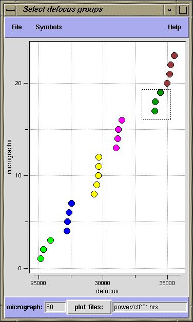

Usage: ctfgroup.py [-s] def_sort.dat
The optional -s flag uses small fonts in the display.
Overview
Input files
Selecting defocus groups
Plotting power spectra
Saving your selections
Defocus spread
The objective is to assign all micrographs to a set of defocus groups using two constraints:
1) Maximize the number of micrographs in each group. SNR increases with the number of particles.
2) Keep defocus values within each group as small as possible (minimize defocus spread).
Power spectra of micrographs from the same defocus group should be plotted together, to ensure
that their zeroes (minima) line up, and do not cancel out.
|  | |
|
Inputs
def_sort.ext
created by the procedure defsort.spi,
during single particle reconstruction.
If there is a third column with defocus group numbers, ctfgroup.py
will use these numbers to color the data points. This doc file should be named on the
command line: ctfgroup.py def_sort.dat
power/ctf***.ext files created by the procedure
defsort.spi. These files
are displayed in Gnuplot with the pyplot interface.
Assigning micrographs to defocus groups
A defocus group should contain a set of points that are vertically aligned, as far as that is possible. That is, they should have nearly the same defocus. Group points by dragging the left mouse button to outline a box around them. Selected points will be assigned a new color. You may reselect points as often as you wish.
Plotting power spectra
Once points are colored (assigned), their corresponding power spectra doc files can be
plotted, by clicking the right mouse button over a group. This opens a Gnuplot window
and a pyplot control window. pyplot
reads the file template in the lower left corner of the main window (next to the
plot files: button). By default, columns 1 vs 5 are plotted from the
power/ctf*** doc files. You can enter a different doc file
template in the entry box. You can change which columns are plotted in the pyplot
control window. The current set of micrographs being plotted are displayed as plus
signs in the main ctfgroup window.
Saving your selections
ctfgroup.py lets you save your selections in a doc file with
the same data columns as the def_sort file:
Micrographs, Defocus, Defocus_Groups. Under the File menu, select
Save as, and specify a file name.
Defocus spread
Enabling the defocus spread plot (under the File menu) displays the
envelope computed by setting
defocus spread = max(defocus) - min(defocus) within a group.
The X axis for this plot is spatial frequency.